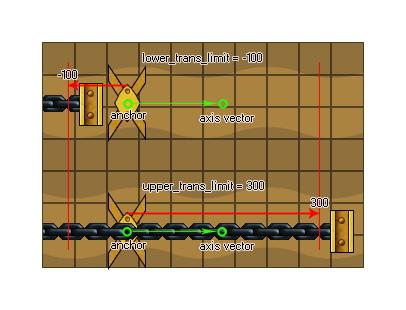

physics_joint_prismatic_create(inst1, inst2, w_anchor_x, w_anchor_y, w_axis_x, w_axis_x, lower_trans_limit, upper_trans_limit, limit, max_motor_force, motor_speed, motor, col)
| Argumento | Descripción |
|---|---|
| inst1 | La primera instancia para conectarse con la articulación |
| inst2 | La segunda instancia para conectarse con la articulación |
| w_anchor_x | La coordenada x donde está anclada la articulación, dentro del mundo del juego |
| w_anchor_y | La coordenada y donde está anclada la articulación, dentro del mundo del juego |
| w_axis_x | El componente x del vector del eje |
| w_axis_y | El componente y del vector de eje |
| lower_trans_limit | El límite más bajo permitido para el movimiento conjunto |
| upper_trans_limit | El límite más bajo permitido para el movimiento conjunto |
| limit | Si limitar el movimiento de la articulación (verdadero) o no (falso) |
| max_motor_force | Establece la velocidad máxima de movimiento para el motor |
| motor_speed | Esta es la velocidad a la cual el motor debería moverse |
| motor | Si el motor debe estar activo (verdadero) o no (falso) |
| col | Si las dos instancias pueden colisionar (verdadero) o no (falso) |
Devoluciones: índice de la articulación
Al igual que una articulación giratoria, la articulación prismática solo tiene un grado de libertad, pero con esta articulación es direccional con respecto a un eje en lugar de giratoria y en realidad evita cualquier forma de rotación. Aquí hay una imagen para ayudarte a visualizar cómo funciona esto:
Tenemos dos instancias unidas en el punto de anclaje, con un eje para el movimiento definido a partir del vector las dos coordenadas w_axis x / y relativas a las coordenadas (0,0) del mundo de la física (entonces un componente x de 0 y un componente ay de 1 (0,1) haría la articulación una articulación prismática vertical). Esta articulación solo puede moverse con relación a este eje, como un resorte o un pistón. Si establece el límite trans inferior o superior, básicamente limita la cantidad de movimiento a lo largo de este eje, donde la posición 0 es el punto exacto que definió con w_anchor x / y, por lo que un valor negativo iría a la "izquierda" de ese punto a lo largo del eje y un valor positivo al "derecho" como se muestra en el siguiente diagrama (¡tenga en cuenta que "izquierda" y "derecha" son términos relativos!):  También puede definir que la articulación tiene un motor o no. Esto significa que cuando no está influenciado por una colisión, la unión se moverá en una dirección a lo largo del eje. esta dirección se define por la velocidad del motor, con un número positivo hacia las coordenadas del eje ("derecha") y un número negativo hacia el punto de anclaje ("izquierda"). El argumento "max_motor_force" es para limitar la velocidad del movimiento de manera que no se obtenga un motor que se acelera constantemente y para limitar la influencia que una colisión puede tener sobre el movimiento. De esta forma, puede usar un motor de articulación para simular la fricción de la junta estableciendo la velocidad de la junta en cero y la fuerza máxima en un valor pequeño pero significativo. El motor intentará evitar que la junta se mueva, pero cederá a una carga significativa.
Como con todas las uniones, si configura el valor "col" para true entonces las dos instancias pueden interactuar y colisionar entre sí, pero solo si tienen eventos de colisión, sin embargo, si está configurado para false, no colisionarán sin importar qué.
var mainFixture, o_id;
mainFixture = physics_fixture_create();
physics_fixture_set_circle_shape(mainFixture,
sprite_get_width(sprite_index) / 2);
o_id = instance_create_layer(x+25, y, "Instances", obj_Piston);
physics_fixture_bind(mainFixture, id);
physics_fixture_bind(mainFixture, o_id);
physics_joint_prismatic_create(id, o_id, x, y, 0, 10, 0, 0, 0, 5,
0, 1, 1);
physics_fixture_delete(mainFixture);
El código anterior crea y define un nuevo dispositivo y luego crea una instancia de "obj_Piston", vinculando el dispositivo creado a los dos objetos nuevos. A continuación, se unen una junta prismática con la posición de anclaje en las mismas coordenadas x / y de la primera instancia y un eje formado por el vector de la posición x / y y el eje x / y (en este caso 0,10, que es "abajo"). No hay límites en la cantidad de movimiento a lo largo de este eje, pero hemos agregado un motor con 0 velocidades y una fuerza máxima de 5 para simular la fricción de las juntas.